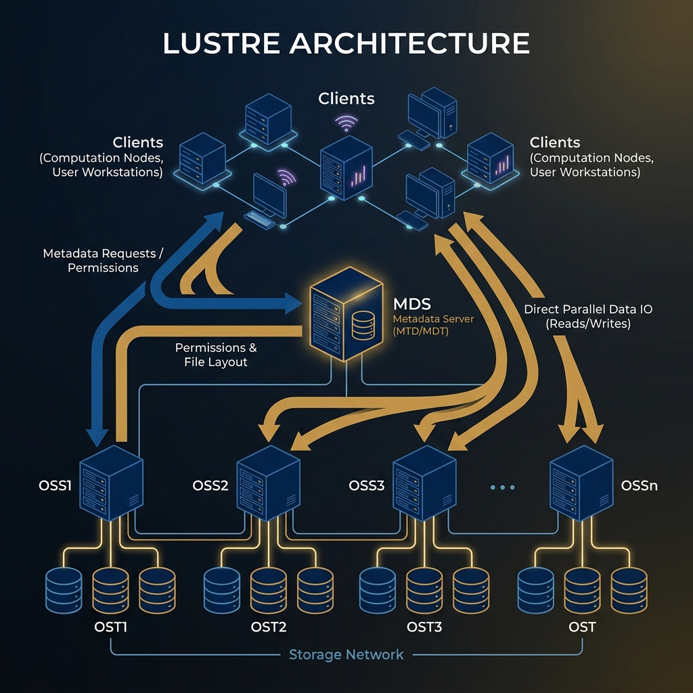

Advanced Storage Concepts
HPC & Cluster ComputingCourse: Operating Systems 4 (HPC)
Module: EIOSY4A
Topic: Advanced HPC Storage Concepts
Reading Time: ~15 Minutes
By the end of this week, you should be able to:
1. Critique the applications of Block, File, and Object storage paradigms within HPC environments.
2. Evaluate the multi-tiered HPC storage hierarchy, from NVMe burst buffers to deep archive.
3. Configure NFS exports and analyze its scalability limitations in massively parallel systems.
4. Analyze the architectures of BeeGFS and Lustre, focusing on striping mechanics and metadata separation.
5. Select and execute appropriate benchmarking tools (IOR vs mdtest) to evaluate throughput and IOPS.
Welcome to Week 8! We now shift from compute-centric to data-centric thinking. This week you discover that a supercomputer is only as fast as its slowest component - and that component is often the storage system.
Assessment Alignment: The weekly quiz and practical assignments for this module specifically evaluate the Learning Outcomes listed below, verifying your ability to operate at an NQF Level 7 standard of analysis and synthesis.
Overview
In the previous weeks, we focused on Computing (Processing). However, a supercomputer that cannot save its data is useless. This week marks the beginning of Part 3: Storage. We will explore the fundamental types of storage, the HPC storage hierarchy, and implement the Network File System (NFS) to share data across our cluster. We will then advance to Parallel File Systems (PFS), which solve the scalability limits of NFS, and look at how to benchmark these systems using industry-standard tools.
1. Storage Taxonomy
Not all storage is created equal. We classify storage based on how the data is addressed and accessed.
1.1 The Three Types of Storage
| Metric | Block Storage (SAN) | File Storage (NAS) | Object Storage (S3) |
|---|---|---|---|
| Access Method | Protocols like iSCSI, Fibre Channel. | Protocols like NFS, SMB/CIFS. | HTTP REST API (GET, PUT). |
| Data Structure | Raw sectors and blocks on a disk. | Hierarchical Files and Folders. | Flat address space; ID + Metadata. |
| Performance | Highest ease; Lowest latency. | Moderate; Overhead of file locking. | High throughput; High latency. |
| Typical Use | Boot drives, Databases (Oracle/SQL). | User Home Directories, Code repos. | Massive Archival, Web content. |
| HPC Context | The physical hard drives in the nodes. | The Shared /home directory. |
Long-term scientific results archive. |
In this course, we primarily deal with Block Storage (the local disk where the OS lives) and File Storage (the shared space where users work).
1.2 Direct vs. Network Attached
Direct Attached Storage (DAS) refers to storage devices that are physically connected directly to the compute node's motherboard, typically via SATA, SAS, or NVMe interfaces. Because the data path is short and dedicated, DAS offers the lowest latency and highest throughput for that specific machine. However, its major limitation in an HPC context is that it creates "islands of data"—content stored on one node's DAS is invisible to other nodes, creating a barrier to distributed collaboration.
Network Attached Storage (NAS), on the other hand, decouples the storage from the compute nodes, placing it on a dedicated server that shares files over the network (usually via Ethernet). This allows every node in the cluster to access the exact same dataset simultaneously. While this introduces network latency and potential congestion, the ability to have a unified, consistent view of data across the entire cluster makes NAS essential for shared home directories and collaborative workflows.
2. The HPC Storage Hierarchy
Analogous to the CPU Memory Hierarchy (spanning from nanosecond-speed Registers to slower DRAM), storage infrastructure is organized into a steep pyramid defined by the trade-off between speed and capacity. Data flows through these layers, moving from massive, slow archives to smaller, high-speed buffers closer to the processor. Understanding this hierarchy is critical for designing workflows that mitigate I/O latency.
| Tier | Technology | Speed | Capacity | Purpose |
|---|---|---|---|---|
| 1. Burst Buffer | NVMe / SSD | > 100 GB/s | Small (TB) | Absorption of checkpoints during simulation. |
| 2. Fast Scratch | Parallel FS (BeeGFS/Lustre) | 10-50 GB/s | Medium (PB) | Active simulation data (Hot data). |
| 3. Home Area | NFS / NAS | < 1 GB/s | Medium (TB) | Source code, scripts, binaries (Warm data). |
| 4. Archive | Tape / Object Store | Slow | Infinite (EB) | Long-term retention (Cold data). |
Critical Rule: Never run high-performance I/O jobs in the Home Area (NFS). It will crash the head node. Using NFS for /home is convenient for editing scripts, but actual computation should happen in Scratch.
3. The Network File System (NFS)
The Network File System (NFS) serves as the de facto standard for distributed file sharing across Unix and Linux environments. Originally developed by Sun Microsystems in 1984, it allows client systems to access files over a network as if they were locally attached storage. Despite its age, its simplicity and ubiquity make it the default choice for sharing home directories and configuration files in almost every supercomputing cluster.
3.1 Architecture
NFS operates on a strict Client-Server architecture.
- NFS Server: This is the host machine that physically owns the storage media. It typically runs the user-space
nfsddaemon, which listens for incoming requests and "exports" specific local directories to the network, making them available for remote access. - NFS Client: These are the compute nodes or workstations that need access to the data. They "mount" the remote exported directory into their local file system hierarchy. To the user and the operating system, the files appear as if they were local, but all I/O operations are actually forwarded over the network using Remote Procedure Calls (RPC).
3.2 Exports
The NFS server manages client authorization and directory visibility through the /etc/exports configuration file. This file acts as an access control list (ACL), defining which directories are shared, which IP addresses or subnets can access them, and what specific read/write privileges are granted to each client.
| Option | Meaning |
|---|---|
rw |
Read/Write: Clients can modify files. |
sync |
Synchronous: Server confirms write to disk before replying (Safer, Slower). |
no_root_squash |
Trust Root: Allows the client root user to act as root on the server (Dangerous in enterprise, useful in clusters). |
Example Config:
/home 10.0.0.0/24(rw,sync,no_root_squash)
Explanation: Configures an NFS export allowing the entire `10.0.0.0/24` subnet read-write access without root squashing, which is typical for HPC shared home directories.
3.3 The Locking Problem (POSIX)
NFS is POSIX compliant, meaning it strictly enforces file consistency. If User A writes to a file, User B must see that change immediately.
- On a single laptop, this is easy.
- On 1,000 nodes, ensuring User B (on Node 500) sees the write from User A (on Node 1) instantly requires expensive network locking traffic.
This is why NFS does not scale. As you add more clients, the overhead of maintaining this "State" locks creates a bottleneck at the single server. This limitation drives the need for Parallel File Systems.
4. Parallel File Systems (BeeGFS)
To overcome the scalability limitations of NFS, High Performance Computing applies the same principle used in distributed computing: Parallelism. Just as MPI splits a computational problem across multiple CPU cores, a Parallel File System splits a single large file across multiple storage servers (a technique called striping). This allows the cluster to aggregate the bandwidth of thousands of disks simultaneously, eliminating the single-server bottleneck.
4.1 The I/O Bottleneck
Imagine a cluster with 100 Compute Nodes. If we use NFS, all 100 nodes try to read from the single Master Server at the same time.
To analyze this bottleneck, we use Little's Law, which relates the number of I/O requests ($L$) to the arrival rate ($\lambda$) and the wait time ($W$):
$$ L = \lambda \times W $$
In a saturated NFS system, as the number of requests ($L$) increases, the wait time ($W$) grows exponentially because the arrival rate ($\lambda$) is limited by the server's single network interface. Parallel File Systems solve this by distributing the load.
The total Parallel Throughput ($T_{total}$) of a striped file system is the sum of the individual throughputs of the storage targets ($T_i$), adjusted by an efficiency factor ($\eta$):
$$ T_{total} = \eta \sum_{i=1}^{n} T_i $$
By increasing $n$ (the number of storage servers), we can theoretically achieve linear scaling of I/O performance.
4.2 Striping
Striping is the core concept of high-performance I/O. Instead of writing a 10GB file to a single hard drive, the file is broken into small "Chunks" (e.g., 512KB each). These chunks are distributed across multiple storage servers in a round-robin fashion.
| Concept | Description | Benefit |
|---|---|---|
| Chunking | Splitting a file into pieces. | Allows distribution. |
| Striping | Spreading chunks across $N$ servers. | Aggregate Bandwidth = $N \times$ Single Server Speed. |
4.3 Separation of Metadata and Data
A defining characteristic of Parallel File Systems is the architectural decoupling of Metadata from Data. In a traditional filesystem, these sit together; in BeeGFS and Lustre, they are physically separated.
- Metadata: This is "data about data"—filenames, directory structures, access permissions, and file location maps. Metadata operations typically involve small, random I/O patterns dependent on high IOPS (Input/Output Operations Per Second).
- Object Storage: This is the actual file content, broken down into chunks. These operations involve large, sequential I/O patterns dependent on high Bandwidth (Throughput).
By physically separating these two distinct workloads onto different servers, the system can scale them independently—adding more metadata servers to handle billions of files, or more storage servers to handle petabytes of data.
4.4 BeeGFS Architecture
BeeGFS is designed for performance and flexibility, consisting of four independent services that work together to create a unified namespace. This modular design allows for "Ad-hoc" file systems, where the storage service runs on the same nodes as the compute jobs to maximize locality.
Figure 2: BeeGFS Architecture Interactions.
4.4.1 Management Service (beegfs-mgmtd)
The Management Service acts as the central "brain" and registry for the entire cluster. Its primary role is to maintain a live list of all active nodes and their current status, ensuring the cluster's topology is known. When a client mounts the file system, it first contacts the Management Service to discover the location of the metadata and storage servers. Due to its critical but lightweight role, it typically runs on the Master Node.
4.4.2 Metadata Service (beegfs-meta)
The Metadata Service (MDS) is responsible for managing the logical directory tree, including file names, hierarchy, and permissions (ownership, timestamps). When a user runs a command like ls -l, they are communicating directly with the MDS. The MDS informs the client exactly where the data chunks for a requested file are stored across the various Storage Targets. A key feature of BeeGFS is its ability to scale vertically by adding multiple Metadata Servers to handle billions of files, a capability known as Distributed Metadata. These services usually run on dedicated high-performance servers or coexist on the Master Node.
4.4.3 Storage Service (beegfs-storage)
The Storage Service is the "heavy lifter" of the file system, managing the physical hard drives (typically formatted with XFS or ext4) and storing the raw data chunks. When a large file is written, the client splits it into fixed-size chunks (e.g., 512KB) and sends them to different Storage Servers (OSS) in parallel to maximize throughput. These physical storage directories are referred to as Storage Targets. In a converged infrastructure, these services may run directly on the Compute Nodes, though they often reside on dedicated storage hardware.
4.4.4 Client Service (beegfs-client)
The Client Service is a kernel module installed on every compute node that requires access to the file system. It mounts the BeeGFS file system (e.g., at /mnt/beegfs) and presents it to the operating system as a standard local directory. Behind the scenes, it handles the complex networking logic required to communicate with the Management, Metadata, and Storage services transparently, allowing users to interact with petabytes of remote data as if it were on their local disk.
Comparison:
- NFS: Single Server, Limited Scalability, Good for
/home. - BeeGFS: Distributed Servers, Linear Scalability, Good for
/scratch.
5. Lustre File System
While BeeGFS is excellent for its ease of use and performance, Lustre is the most widely used open-source parallel file system in the Top500 supercomputers. It is a kernel-native filesystem known for extreme scalability, managing Exabytes of data.
5.1 Architecture Components
Lustre uses very specific terminology consistent with early PFS designs:
| Component | Term | Daemon | Purpose |
|---|---|---|---|
| MGS | Management Server | mgds |
configuration registry (similar to BeeGFS Management). |
| MDS | Metadata Server | mds |
Compute node that manages file names and permissions. |
| MDT | Metadata Target | (disk) | The physical block device where metadata is stored. |
| OSS | Object Storage Server | oss |
Compute node that manages file contents. |
| OST | Object Storage Target | (disk) | The physical block device where file chunks/stripes are stored. |

Figure 3: Lustre Architecture. Clients interact with the MDS for permissions/layout, then directly with OSS for data.5.2 Lustre vs. BeeGFS
| Feature | BeeGFS | Lustre |
|---|---|---|
| Ease of Use | High (Install via apt/dnf, simple config). | Low (Often requires patched Kernel, complex config). |
| Scalability | Excellent (Linear). | Extreme (Powers the world's largest systems). |
| Metadata | Distributed Metadata (Multiple metadata servers). | Traditionally Single MDS (Dual MDS is newer feature). |
| Client | Kernel Module. | Kernel Module. |
| Target Audience | Universities, Small-to-Medium HPC for flexibility. | National Labs, Massive Government Clusters for raw scale. |
5.3 Stripping Implementation
In Lustre, you can set striping on a per-file or per-directory basis using lfs setstripe.
lfs setstripe -c 4 -S 1M /mnt/lustre/bigfile- -c 4: Stripe Count (Use 4 OSTs).
- -S 1M: Stripe Size (1MB chunks).
6. Benchmarking & Optimization
How do we know our storage is fast? We use industry-standard benchmarks like IOR and mdtest to measure the two critical dimensions of storage performance: Throughput and IOPS.
6.1 Throughput vs. IOPS
| Metric | Definition | Critical For... | Unit |
|---|---|---|---|
| Throughput | The volume of data moved per second. | Large datasets, Checkpoints, Video. | GB/s or MB/s |
| IOPS | Input/Output Operations Per Second. | Compiling code, Machine Learning (many small images). | Ops/s |
6.2 IOR (Interleaved or Random)
IOR is the standard benchmark for measuring Throughput. It coordinates $N$ MPI processes to write to a single shared file (N-to-1) or many unique files (N-to-N).
- N-to-1 (Single Shared File): Hardest test (locking contention).
- N-to-N (File Per Process): Scales better, but creates metadata clutter.
6.3 mdtest (Metadata Benchmark)
mdtest measures IOPS (Metadata performance). It performs a cycle of:
- Create:
touch file_001...touch file_1000 - Stat:
ls -l(Reading attributes) - Remove:
rm file_001...rm file_1000
If your Metadata Server (MDS) is slow, the cluster will feel sluggish even if throughput is high.
6.4 Burst Buffers
As the gap between Compute Speed and Disk Speed widens, we use Burst Buffers—a layer of high-speed NVMe/SSD physically close to the Compute Nodes.
- Absorption: Absorb massive checkpoint data instantly.
- Efficiency: Protect mechanical drives from random I/O.
7. Summary and Next Steps
This week, we moved from the compute-centric view of HPC to the data-centric view. You now understand that a supercomputer is only as fast as its slowest component, which is often the file system. We explored the hierarchy from local Block Storage to shared NFS, and finally to high-performance Parallel File Systems like BeeGFS and Lustre that strip data across thousands of drives using metadata separation. We also learned how to prove performance using IOR and mdtest.
Preparing for Week 9
Next week, we return to hardware, but this time looking at Accelerators. We will leave the general-purpose CPU behind and explore specialized hardware designed to crunch numbers faster than any processor. We will:
- Understand Heterogeneous Computing (CPU + GPU).
- Explore the architecture of a GPGPU (SIMT, Warps, Cores).
- Learn why GPUs are the engine behind the modern AI revolution.
Checklist:
- Can you explain why NFS fails to scale beyond a few dozen nodes (Locking)?
- Do you understand the difference between a Metadata Server (MGS/MDS) and an Object Storage Server (OSS)?
- If you wanted to test the maximum write speed of your cluster, would you use
dd,IOR, ormdtest? - Why is a Burst Buffer necessary in the era of Exascale computing?
Resources
- Sterling, T., Anderson, M. and Brodowicz, M. (2018). High Performance Computing: Modern Systems and Practices. Morgan Kaufmann. Chapter 18.
- NFS HowTo
- BeeGFS Documentation
- Lustre Wiki
- Lustre Architecture Reference (PDF)
- IO500 List
Test Your Knowledge
Ready to check your understanding of this week's material? Take the interactive quiz now!
Start Quiz